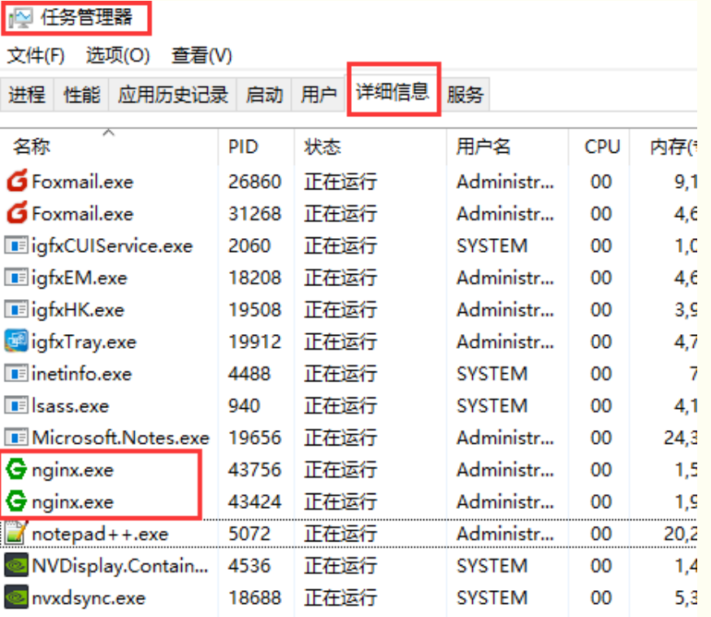
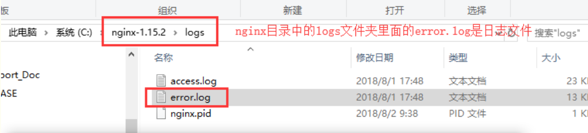
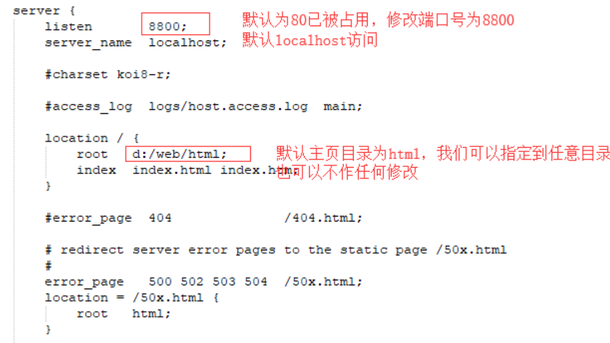
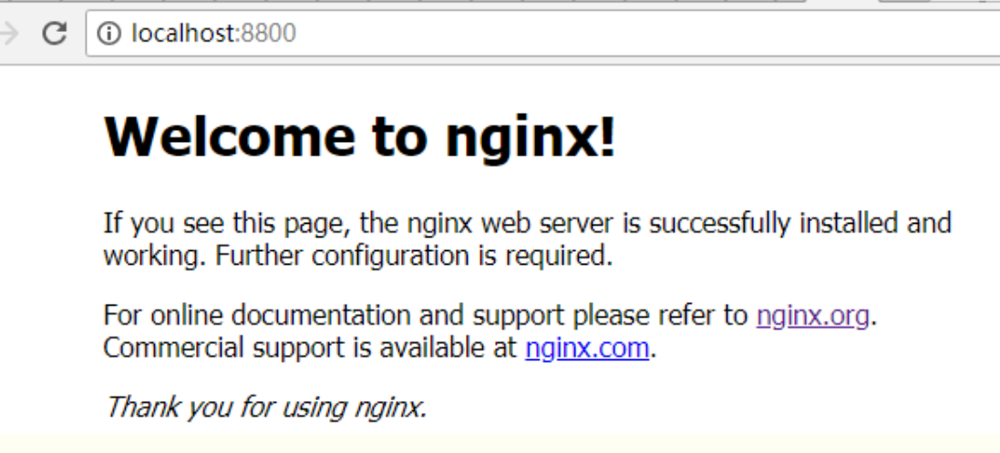

一、Nginx简介
Nginx (engine x) 是一个高性能的HTTP和反向代理服务器，也是一个IMAP/POP3/SMTP服务器。Nginx是由伊戈尔·赛索耶夫为俄罗斯访问量第二的Rambler.ru 站点（俄文：Рамблер）开发的.
它也是一种轻量级的Web服务器，可以作为独立的服务器部署网站（类似Tomcat）。它高性能和低消耗内存的结构受到很多大公司青睐，如淘宝网站架设。
先下载直接去官网 nginx.org

分别有Linux和Windows两个版本

点击后就会下载，下载完成后开始安装，其实官网已经告诉了如何安装，右侧“documentation -> nginx windows”就有详细的说明，只是英文而已
二、安装部署
1、下载完成后，解压缩，运行cmd，使用命令进行操作，不要直接双击nginx.exe，不要直接双击nginx.exe，不要直接双击nginx.exe
一定要在dos窗口启动，不要直接双击nginx.exe，这样会导致修改配置后重启、停止nginx无效，需要手动关闭任务管理器内的所有nginx进程，再启动才可以
2、使用命令到达nginx的加压缩后的目录
cd c:\nginx-1.15.2
3、启动nginx服务，启动时会一闪而过是正常的
start nginx
4、查看任务进程是否存在，dos或打开任务管理器都行
tasklist /fi "imagename eq nginx.exe"

打开任务管理器在进程中看不到nginx.exe的进程（双击nginx.exe时会显示在这里），需要打开详细信息里面能看到隐藏的nginx.exe进程

如果都没有可能是启动报错了查看一下日志，在nginx目录中的logs文件夹下error.log是日志文件

常见的错误：
(1)端口号被占用
(2)nginx文件夹路径含中文
其他错误就详细看log中的描述
5、修改配置文件，进入解压缩目录，直接文件夹点击进去即可，不需要从dos操作

在conf目录下找到nginx.conf使用txt文本打开即可，找到server这个节点，修改端口号，如果有需求可以修改主页目录没有就不用修改

修改完成后保存，使用以下命令检查一下配置文件是否正确，后面是nginx.conf文件的路径，successful就说明正确了
nginx -t -c /nginx-1.15.2/conf/nginx.conf

如果程序没启动就直接start nginx启动，如果已经启动了就使用以下命令重新加载配置文件并重启
nginx -s reload
之后就打开浏览器访问刚才的域名及端口http://localhost:8800，出现欢迎页就说明部署成功了

6、关闭nginx服务使用以下命令，同样也是一闪而过是正常的，看一下是否进程已消失即可
快速停止
nginx -s stop
完整有序的关闭
nginx -s quit
三、优化配置
打开nginx.conf按照自己需求进行配置，下面列出简单的一些常规调优配置
#user nobody;
#==工作进程数，一般设置为cpu核心数
worker_processes 1;
#error_log logs/error.log;
#error_log logs/error.log notice;
#error_log logs/error.log info;
#pid logs/nginx.pid;
events {
#==最大连接数，一般设置为cpu*2048
worker_connections 1024;
}
http {
include mime.types;
default_type application/octet-stream;
#log_format main '$remote_addr - $remote_user [$time_local] "$request" '
# '$status $body_bytes_sent "$http_referer" '
# '"$http_user_agent" "$http_x_forwarded_for"';
#access_log logs/access.log main;
sendfile on;
#tcp_nopush on;
#keepalive_timeout 0;
#==客户端链接超时时间
keepalive_timeout 65;
#gzip on;
#当配置多个server节点时，默认server names的缓存区大小就不够了，需要手动设置大一点
server_names_hash_bucket_size 512;
#server表示虚拟主机可以理解为一个站点，可以配置多个server节点搭建多个站点
#每一个请求进来确定使用哪个server由server_name确定
server {
#站点监听端口
listen 8800;
#站点访问域名
server_name localhost;
#编码格式，避免url参数乱码
charset utf-8;
#access_log logs/host.access.log main;
#location用来匹配同一域名下多个URI的访问规则
#比如动态资源如何跳转，静态资源如何跳转等
#location后面跟着的/代表匹配规则
location / {
#站点根目录，可以是相对路径，也可以使绝对路径
root html;
#默认主页
index index.html index.htm;
#转发后端站点地址，一般用于做软负载，轮询后端服务器
#proxy_pass http://10.11.12.237:8080;
#拒绝请求，返回403，一般用于某些目录禁止访问
#deny all;
#允许请求
#allow all;
add_header 'Access-Control-Allow-Origin' '*';
add_header 'Access-Control-Allow-Credentials' 'true';
add_header 'Access-Control-Allow-Methods' 'GET, POST, OPTIONS';
add_header 'Access-Control-Allow-Headers' 'DNT,X-CustomHeader,Keep-Alive,User-Agent,X-Requested-With,If-Modified-Since,Cache-Control,Content-Type';
#重新定义或者添加发往后端服务器的请求头
#给请求头中添加客户请求主机名
proxy_set_header Host $host;
#给请求头中添加客户端IP
proxy_set_header X-Real-IP $remote_addr;
#将$remote_addr变量值添加在客户端“X-Forwarded-For”请求头的后面，并以逗号分隔。 如果客户端请求未携带“X-Forwarded-For”请求头，$proxy_add_x_forwarded_for变量值将与$remote_addr变量相同
proxy_set_header X-Forwarded-For $proxy_add_x_forwarded_for;
#给请求头中添加客户端的Cookie
proxy_set_header Cookie $http_cookie;
#将使用代理服务器的主域名和端口号来替换。如果端口是80，可以不加。
proxy_redirect off;
#浏览器对 Cookie 有很多限制，如果 Cookie 的 Domain 部分与当前页面的 Domain 不匹配就无法写入。
#所以如果请求 A 域名，服务器 proxy_pass 到 B 域名，然后 B 服务器输出 Domian=B 的 Cookie，
#前端的页面依然停留在 A 域名上，于是浏览器就无法将 Cookie 写入。
#不仅是域名，浏览器对 Path 也有限制。我们经常会 proxy_pass 到目标服务器的某个 Path 下，
#不把这个 Path 暴露给浏览器。这时候如果目标服务器的 Cookie 写死了 Path 也会出现 Cookie 无法写入的问题。
#设置“Set-Cookie”响应头中的domain属性的替换文本，其值可以为一个字符串、正则表达式的模式或一个引用的变量
#转发后端服务器如果需要Cookie则需要将cookie domain也进行转换，否则前端域名与后端域名不一致cookie就会无法存取
#配置规则：proxy_cookie_domain serverDomain(后端服务器域) nginxDomain(nginx服务器域)
proxy_cookie_domain localhost .testcaigou800.com;
#取消当前配置级别的所有proxy_cookie_domain指令
#proxy_cookie_domain off;
#与后端服务器建立连接的超时时间。一般不可能大于75秒；
proxy_connect_timeout 30;
}
#error_page 404 /404.html;
# redirect server error pages to the static page /50x.html
error_page 500 502 503 504 /50x.html;
location = /50x.html {
root html;
}
}
#当需要对同一端口监听多个域名时，使用如下配置，端口相同域名不同，server_name也可以使用正则进行配置
#但要注意server过多需要手动扩大server_names_hash_bucket_size缓存区大小
server {
listen 80;
server_name www.abc.com;
charset utf-8;
location / {
proxy_pass http://localhost:10001;
}
}
server {
listen 80;
server_name aaa.abc.com;
charset utf-8;
location / {
proxy_pass http://localhost:20002;
}
}
}